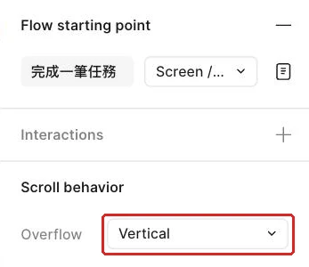

讓長清單能捲動，導覽與漂浮按鈕不擋內容
工作室行政人員要在手機上查看一整天的待辦，同時隨時看得到頁首、導覽與回到頂端的入口。
從可點的任務流程接著做
工作室行政人員已經能從待處理清單進入詳情，也能開啟確認彈窗；當任務增加到十多筆時，新的問題才會出現：手機一次只看得到一小段內容。若把整個手機畫面拉高，畫面會變成一張長海報，行政人員仍然無法在實際手機視窗裡滑到下方的任務。
這堂會接著使用上次做好的清單、詳情、彈窗與底部面板，把清單改成真正能捲動的手機畫面。沒有上次成果時，先打開彈窗與底部面板那一頁的本堂規格表補做，約需二十到三十分鐘。接著從本堂起始材料核對要使用的畫面與圖層，再用完成檢查表記下中段、底部與橫向卡片的檢查結果。
完成後，下一次測試整條任務時，就能把「找得到最後一筆」也放進任務，而不是只測第一個畫面。
先分清楚：視窗、內容與固定物件各做一件事
現在先把畫面想成一扇窗。最外層手機 Frame 是窗框，決定使用者一次看見多大的範圍；清單是窗後的長內容，決定有多少資料可以往下移動。內容比窗框高，並且外框設定正確的 Overflow（溢出捲動方式）後，Preview 才會出現垂直捲動。
例如，主線手機外框高 874，清單內容可以因為十二筆任務而超過這個高度。外框仍維持 874，使用者才能在固定高度中往下捲。外框同時開啟 Clip content，編輯畫布會把超出視窗的部分裁在邊界之外；被裁掉的內容仍留在清單裡，進入 Preview 後就能滑到。
接著要分清楚三種 Position（捲動時的位置方式）。Scroll with parent 會跟著父層一起移動，適合清單列與一般內容。Fixed 會一直留在視窗同一個位置，適合頁首、底部導覽與漂浮按鈕。Sticky 會先跟著內容移動，碰到上緣後才暫時黏住，適合分類標題。
| 位置方式 | 一開始捲動時 | 到達畫面邊緣後 | 適合的內容 |
|---|---|---|---|
| Scroll with parent | 跟著清單移動 | 繼續離開畫面 | 任務列、說明文字 |
| Fixed | 留在原來的視窗位置 | 持續固定 | 頁首、底部導覽、漂浮按鈕 |
| Sticky | 先跟著清單移動 | 碰到上緣後停住 | 日期或分類標題 |
這三種方式解決的是「捲動時去哪裡」，不是「在畫布上畫在哪裡」。把標題放在最上方，只能決定起始位置；把 Position 設成 Sticky，才會產生先移動、再黏住的行為。Sticky 只在 Vertical 捲動時有效，而且有效範圍受直接父層限制。分類標題離開父層範圍時也會離開黏住狀態，這讓不同區段可以輪流接手頂端位置。
固定物件還會帶來遮擋。底部導覽與漂浮按鈕留在視窗上方時，清單最後一筆可能已經捲到底，卻藏在它們後面。解法是在清單末尾保留一段空白安全區，讓最後一列還能往上移到可閱讀、可點擊的位置。判斷固定做得對，除了看它有沒有留在原位，也要看被它覆蓋的內容是否仍能完整使用。
示範：把工作室長清單做成真正可捲動的畫面
先集中看完本堂規格。操作時只要引用表中的名稱，就不必在每一步重新記一串座標。
| 圖層或設定 | 主線規格 | 用途 |
|---|---|---|
Screen / List（清單畫面） | W 402、H 874、Clip content | 手機視窗與 Vertical Overflow 的設定層 |
List / Content（清單內容） | x 24、y 110、W 354、高度 Hug、垂直 Auto layout、Gap 12 | 放十二筆任務與底部安全空間 |
Header / Fixed（固定頁首） | x 0、y 0、W 402、H 80、Fill Card；標題 x 24、y 24 | 放入原本的「待處理清單」標題並固定在上方 |
Nav / Bottom（底部導覽） | x 0、y 810、W 402、H 64、Fill Card | 固定在手機底部 |
Button / Floating（漂浮按鈕） | 先在畫布空白處建立，再拖到 Screen / List 底下成為直接子層；x 330、y 730、W 48、H 48、圓角 24、Fill Primary；Icon / Chevron Right 旋轉 90 度，在 Selection colors 把 Text 換成 Card、置中 | 固定在右下並回到 Anchor / Top |
Anchor / Top（頂端錨點） | 先在畫布空白處建立透明 Frame，再拖到 Screen / List 底下成為直接子層；x 0、y 0、W 402、H 1 | Button / Floating 的 Scroll to 目的地 |
Spacer / Bottom（底部安全空間） | W Fill、H 140 | 讓最後一筆能移到遮擋區上方 |
Section / Sticky（黏頂分類標題） | 只建在比較畫面 Screen / List Sticky，主線 Screen / List 不放；先在畫布空白處按 F 建 H 48 的 Frame（不是 ⇧S 的 Section），再到 Layers 拖進 List / Content 的 Row / T01 與 Row / T02 之間；W Fill container，跟隨 List / Content 的 354；Fill Surface；內放文字「今日任務」 | 先捲動，再黏在父層頂端 |
Scroll / Horizontal（橫向卡片視窗） | 放在 Screen / List 的 List / Content 裡，Layers 中 Row / T03 與 Row / T04 之間；W Fill、H Hug、Clip content、Overflow Horizontal | 顯示橫向卡片的一部分 |
| 橫向卡片內容 | 水平 Auto layout、Gap 12；三張卡片各 W 200、H 140 Fixed、Fill Card，各放一行文字「今天到期」「明天到期」「本週到期」；總寬 624 | 測試 Horizontal Overflow |
- 選取原本的
Screen / List（清單畫面），沿用這個正式名稱並準備加入完整任務資料；做完後，主線仍只有同一張清單畫面。 - 將長清單外框設成表中的手機尺寸；右側會顯示固定寬高，畫面比例維持原本的手機視窗。
- 確認
List / Content已有十二筆並超出外框下緣；畫布上會看見清單延伸到視窗之外，最後一筆維持「寄出月底請款單」。 - 選取長清單最外層並開啟 Clip content；畫布上只顯示手機邊界內的部分。
- 切到 Prototype 分頁，在 Scroll behavior 的 Overflow 選 Vertical；右側會顯示垂直捲動設定。

- 按 Shift+Space 開啟 Preview；預覽會留在編輯器內並顯示手機畫面。
- 在清單上向下捲動；後面的任務會依序進入視窗。
- 捲到最底部；最後一筆「寄出月底請款單」與期限「下週五17:00」會出現，並且外層手機仍維持原來的高度。
有了真正的捲動，接著選取清單原本的「待處理清單」標題，按 Cmd+Opt+G（Windows 為 Ctrl+Alt+G）包成 Frame，命名為 Header / Fixed（固定頁首）。依規格表設定尺寸與 Fill Card，再把頁首內的標題設為 x 24、y 24。完成後，標題只會在頁首裡出現一次。選取 Header / Fixed 後，在同一區的 Position 選 Fixed。設定完成時，Figma 會把固定物件移到其他圖層上方，Layers 也會出現 FIXED／SCROLLS 分區，這是預期的層級變化。再次進入 Preview，頁首應在清單移動時留在視窗頂端。

接著在畫布空白處按 F 建立 Button / Floating（漂浮按鈕）。到 Layers 把它拖到 Screen / List 底下，使它成為清單畫面的直接子層。尺寸依規格表設定。把圓角設為 24。Fill 套用 Primary。放入既有的 Icon / Chevron Right。把圖示旋轉 90 度。選取圖示使用處，在 Selection colors 把 Text 換成 Card。將圖示在按鈕內置中。完成後，畫布右下會看到深綠底、白色向上箭頭的圓形按鈕。
同樣的方法可以用在 Nav / Bottom 與 Button / Floating。底部導覽固定後，行政人員捲到任何位置都能看見目前所在頁。漂浮按鈕固定後，長清單中段也保有回到上方的入口。若長清單外層使用 Auto layout，先對固定物件啟用 Ignore auto layout，物件才可以保留獨立位置。
漂浮按鈕還需要一個明確目的地。先在畫布空白處按 F 建立透明 Frame。命名為 Anchor / Top（頂端錨點）。把高度設為 1。到 Layers 把它拖到 Screen / List 底下，使它成為清單畫面的直接子層。把 X 設為 0。把 Y 設為 0。再把 W 設為 402；高度維持 1。完成後，Layers 會顯示頂端錨點與 List / Content 同層。選取漂浮按鈕。建立 On click 互動。Action 選 Scroll to。目的地選 Anchor / Top。完成後，Prototype 的互動設定會顯示頂端錨點。進入 Preview 並先捲到中段，再按漂浮按鈕；畫面會回到頂端錨點，第一列不會被固定頁首蓋住。
最後處理底部遮擋。在 List / Content 最後新增 Spacer / Bottom，並套用表中的高度。再次捲到底時，安全空間會進入底部遮擋區，最後一筆則停在導覽與漂浮按鈕上方。這時要同時讀完最後一筆文字，也要能點到該列的動作。
跟著做：比較 Fixed、Sticky 與橫向捲動
示範已經完成一條可捲動的長清單，現在用較少提示做三個對照。每完成一個對照，就回 Preview 觀察實際移動，並用畫面變化核對右側設定值。
- 先讓固定頁首、底部導覽與漂浮按鈕在長清單中段保持原位；請從 Position 找到適合的設定。
- 再捲到最底部檢查最後一列；請調整清單末端的安全空間，直到文字與動作都露出。
- 接著複製長清單畫面作為 Sticky 比較，命名為
Screen / List Sticky；新畫面會保留原本的垂直捲動內容。主線Screen / List維持固定頁首、不放 Sticky；這張比較畫面留在檔案中對照，不接進流程。 - 移除比較畫面中的固定頁首；視窗頂端會空出觀察黏頂標題的位置。
- 在畫布空白處按 F 建 H 48 的 Frame（不是 ⇧S 的 Section），命名為
Section / Sticky，在 Frame 內放入文字「今日任務」，Fill 套用Surface。到 Layers 把它拖進Screen / List Sticky的List / Content，放在Row / T01與Row / T02之間，看到藍色插入線再放開；畫布上若沒有出現在第一筆任務下方，就在 Layers 上下拖動調整。最後把寬度設為 Fill container。完成後，分類標題會和 354 寬的清單內容對齊，並以實色底遮住下方內容。 - 將分類標題的 Position 改成 Sticky；Layers 與右側會反映新的位置方式。
- 進入 Preview 向下捲；分類標題會先移動，碰到視窗上緣後才停住。
- 在 Layers 同時選取
Section / Sticky與緊接在它後面的兩筆任務，按 Cmd+Opt+G（Windows 為 Ctrl+Alt+G）包成一個 Frame，命名為Group / Short；這個父 Frame 只有一個標題加兩列高。進入 Preview 繼續捲，分類標題黏住一下後，會在Group / Short離開畫面時一起離開。 - 連按 Cmd+Z（Windows 為 Ctrl+Z），直到 Layers 中的
Group / Short消失、三層回到List / Content；再進 Preview，黏住的有效範圍會恢復到整段清單。
看懂垂直捲動後，回到主線 Screen / List，在第三筆任務之後建立橫向卡片區。
- 在畫布空白處按 F 建三個 Frame，每個 W 200、H 140、Fill
Card，各用 T 放一行文字：「今天到期」「明天到期」「本週到期」；畫布上會有三張小卡。 - 同時選取三張卡並按 Shift+A；若排列方向是垂直，點 Horizontal，Gap 設為 12，並確認每張卡的 W 仍是 200 Fixed。三張卡會左右排成一列，外框總寬 624。
- 將外框命名為
Scroll / Horizontal，再開啟 Clip content；Layers 會顯示三張卡都在這個外框底下。 - 到 Layers 把
Scroll / Horizontal拖進Screen / List的List / Content，放在Row / T03與Row / T04之間，看到藍色插入線再放開；畫布上橫向卡片區會出現在第三筆任務下方，若位置不對就在 Layers 上下拖動調整。 - 把
Scroll / Horizontal的 W 設為 Fill container、H 設為 Hug；外框會縮成 354 寬，第三張卡被裁在右側之外。 - 切到 Prototype 分頁，在 Scroll behavior 的 Overflow 選 Horizontal；右側會顯示水平捲動設定。
- 進入 Preview 左右滑動橫向卡片；第一張與最後一張都要能完整出現，主清單仍維持 Vertical，兩個方向各自服務不同內容。
最後做一次位置說明。請用自己的話記錄：Fixed 從捲動開始就留在視窗原位；Sticky 先隨內容移動，碰到上緣才停；Horizontal 讓寬內容在固定寬度中左右瀏覽。能說出畫面變化，代表你能把選單名稱連回實際行為。
看兩種導覽安排，各適合哪一種清單
版本一把頁首、底部導覽與回頂按鈕都設為 Fixed。使用者捲到任何位置都看得到所在頁與回頂入口；畫面可用高度較少，清單末端需要安全空間避開遮擋。
版本二讓主要頁首跟著內容移動，只把分類標題設為 Sticky，底部也沒有持續顯示的導覽。使用者能把較多畫面留給資料；要跨到其他分頁時，得先回到清單起點或使用另一個入口。
哪一版都可能成立。請說明工作室待處理清單在什麼情況適合版本一，什麼情況適合版本二，並把「常用入口」「可見範圍」「底部遮擋」放進理由。
看取捨理由
若行政人員常在不同分頁之間切換，並且需要隨時回頂，版本一能持續提供入口，但要用安全空間保護最後一筆。若這是一段專注閱讀、分類很多的清單，版本二可讓內容取得較大空間，Sticky 分類標題仍能維持段落脈絡；代價是跨頁與回頂入口不會一直出現在眼前。
卡住時，先看現象再找設定層
| 看到的現象 | 通常的原因 | 怎麼修 |
|---|---|---|
| Preview 完全無法上下捲 | 清單內容仍在外框高度內，或 Overflow 設在任務列 | 保留手機外框高度，讓 List / Content 超出，再選最外層設定 Vertical |
| 頁首跟著清單離開 | Position 仍是 Scroll with parent | 選 Header / Fixed，在 Scroll behavior 改成 Fixed |
| Fixed 選項無法產生預期位置 | 固定物件仍受外層 Auto layout 排列 | 對該物件啟用 Ignore auto layout，再回 Preview 核對 |
| 最後一筆被底部導覽蓋住 | 清單末端沒有足夠安全空間 | 增加 Spacer / Bottom，捲到底後確認文字與動作都露出 |
| Sticky 一下就離開 | 分類標題的直接父層太短 | 把它放回涵蓋整段分類內容的父層，再測有效範圍 |
| 橫向卡片無法左右滑 | 卡片總寬沒有超過外框，或 Overflow 設錯層 | 核對內容確實比外框寬，並在 Scroll / Horizontal 設 Horizontal |
換你做：你的題目
從你的畫面清單挑出這次對應的畫面。
把一路做好的題目清單放進固定高度的手機視窗，讓十二筆資料都能捲到，並讓最後一筆避開固定頁首、底部導覽與漂浮按鈕。
三個題目的範例（可以照做，也可以依你的需求改）
| 預約 | 點餐 | 會員 |
|---|---|---|
| 清單放入十二筆服務項目；最後一筆是「幼犬初次洗澡體驗」；底部導覽沿用你在需求與流程那一堂決定的分頁。 | 清單放入十二筆菜單品項；最後一筆是「檸檬磅蛋糕」；底部導覽沿用你在需求與流程那一堂決定的分頁。 | 清單放入十二筆兌換品；最後一筆是「木製書擋一對」；底部導覽沿用你在需求與流程那一堂決定的分頁。 |
這次練習不只確認「滑得動」，還要觀察內容、固定元素與入口是否互相讓位。請保留一份簡短的檢查紀錄，分別寫下清單頂端、中段與底部看見的內容，以及你為何選擇讓某個元素 Fixed 或 Sticky。紀錄要描述畫面結果，讓你下一次改動卡片高度或導覽內容時，知道應回到哪個位置重看。
| 檢查位置 | 預約 | 點餐 | 會員 |
|---|---|---|---|
| 頂端 | 歡迎或清單標題離開後，仍能知道目前在服務項目；第一筆「小型犬基礎洗澡」可完整操作。 | 營業資訊與菜單標題的層級清楚；第一筆「美式咖啡」可完整操作。 | 登入後進入兌換清單，點數與頁面名稱不互相遮擋；第一筆「書店帆布書套」可完整操作。 |
| 中段 | 長說明的「大型犬全套洗澡美容」增高後，固定元素不蓋住注意事項與狀態。 | 長名稱的「季節限定・柚香蜂蜜冷萃咖啡」換行後，價格、說明與狀態仍屬於同一卡片。 | 長名稱的二十週年紀念帆布袋換行後，點數、說明與狀態仍能連續閱讀。 |
| 底部 | 「幼犬初次洗澡體驗」可完整閱讀，並能進入詳情或執行卡片上的動作。 | 「檸檬磅蛋糕」停在底部導覽上方，名稱、價格、說明與狀態都露出。 | 「木製書擋一對」停在底部導覽上方，所需點數、說明與狀態都露出。 |
固定元素也要接受內容壓力測試。把題目的長文字卡片捲到頁首下方、底部導覽上方與漂浮按鈕附近，分別判斷閱讀與點擊是否受到影響。若某個位置發生遮擋，調整的是清單的起始或末端安全空間，而不是縮小卡片文字來騰位置。
完成後留下三句判斷：第一句說明頁首為何要 Fixed 或跟著內容移動；第二句說明分類標題為何使用 Sticky；第三句說明漂浮按鈕是否真的需要持續顯示。這些句子沒有固定答案，但每一句都要引用你在 Preview 看到的結果，例如「捲到中段仍需要辨認頁面」或「按鈕遮住卡片右下動作」。
再做一次狀態交錯的閱讀檢查。預約清單讓「可預約」與「本週額滿」前後相鄰；點餐清單讓「供應中」與「售完」前後相鄰；會員清單則讓三種狀態都出現在同一段可見範圍。捲動停止後，狀態文字仍要和所屬卡片貼近，固定頁首也要完整讓出第一列狀態。這能驗證清單移動時，卡片的內容關係仍然清楚。
最後從底部導覽切到另一個分頁，再回到清單。請自行決定回來時要保留原捲動位置，或回到清單頂端，並在紀錄中說明理由。要保留位置時，選取底部導覽分頁的 Navigate to 互動，在互動設定最下方展開 State，取消勾選 Reset scroll position（預設是勾選）；保持勾選時，回到清單會從頂端開始。若保留位置，使用者可以接著瀏覽；若回到頂端，使用者會重新看見清單名稱與第一筆資料。兩種結果都要讓人知道自己回到了哪個分頁，且導覽的選取狀態要同步更新。
把最後一次 Preview 當成完整交付前的巡覽：從第一筆開始，停在長文字卡片，繼續到最後一筆，再用回頂入口返回。巡覽紀錄要寫出每次停下時看見的頁面名稱、卡片名稱、狀態與可用動作。只要其中一項被固定元素遮住，就回到對應位置調整後重跑這段巡覽。
巡覽完成時，三個停留位置都要留下清楚結果。
要達成的條件：
- 手機外框維持需求頁指定的尺寸，十二筆資料放在會超出視窗的內容層。
- 從第一筆捲到上表最後一筆，名稱、說明、狀態與可用動作都能完整看見。
- 頁首與題目的底部導覽在清單中段及底部都留在原位。
- 漂浮按鈕不遮住名稱、說明、狀態或動作，並能把清單帶回頂端。
- 清單末端保留由你判斷的安全空間，尺寸依實際遮擋結果調整。
- 用一個分類標題比較 Sticky 與 Fixed，並寫下一句差異。
- 保留題目原本的狀態值：預約使用可預約／本週額滿，點餐使用供應中／售完，會員使用可兌換／點數不足／已兌完。
- 卡片若含圖示或圖片，捲動時仍跟著該筆卡片移動。
- 寫一句理由，說明你的做法回應了需求頁裡店主或使用者的哪一句話（引用原句）。
合格的結果要通過以下自我檢查：
- 從清單頂端開始向下滑，內容真的移動，手機外框沒有跟著變高。
- 在中段停下時，頁首、底部導覽與漂浮按鈕仍位於預期位置。
- 捲到底時，上表最後一筆的全部文字與動作都能閱讀及點擊。
- 固定元素沒有蓋住長文字卡片的最後一行，也沒有擋住狀態標籤。
- 點漂浮按鈕後，畫面回到清單內容的起點。
- Sticky 標題先隨內容移動，到達上緣後才停住。
- 在 Preview 關閉再重開後，捲動方向與固定位置仍一致。
- 三個底部導覽分頁名稱和自己的題目相符，沒有混用其他題目的名稱。
- 理由引用的原句真的在需求頁裡。
真的卡住再看：提示
先分別選取手機外框、長內容與固定物件，確認 Overflow 設在外框、內容確實超出、Position 設在要留住的物件；最後捲到題目資料表的最後一筆，再依遮擋調整末端空白。
收好長清單，下一步用任務找問題
工作室行政人員現在可以在固定高度的手機視窗裡看完整份待處理清單。頁首、底部導覽與漂浮按鈕各自留在合適的位置，比較畫面 Screen / List Sticky 的分類標題也會以 Surface 底色黏住。更重要的是，最後一筆不會消失在固定元素後方，第三筆任務之後的橫向卡片也能在有限寬度裡瀏覽。
下一頁會拿這條包含登入、長清單、詳情、確認與完成結果的流程來做單人任務測試。你會先寫測試計畫與任務卡，做完一輪走查後隔開一段時間，再只看任務卡操作；長清單的中段、底部與回頂行為都會成為檢查項目。
完成條件：
- 工作室長清單能在主線手機視窗內捲到最後一筆。
- 固定頁首、底部導覽與漂浮按鈕在中段及底部都不遮擋內容。
- 比較畫面
Screen / List Sticky的 Sticky 分類標題會先移動再黏住，並受直接父層範圍限制。 - 自選題目的十二筆資料都能捲到，最後一筆完整可讀可點。
- 主線第三筆任務之後的橫向卡片可左右滑動，第一張與最後一張都能完整看見。
想一想：如果固定頁首沒有遮住文字，但遮住了任務列的點擊區，這個畫面算完成嗎？
看參考答案
還需要調整。固定元素的檢查同時包含可閱讀與可操作；請改清單起始位置或安全空間，再從中段與底部實際點一次受影響的任務列。
本堂查證來源
來源查證：2026-11-02。